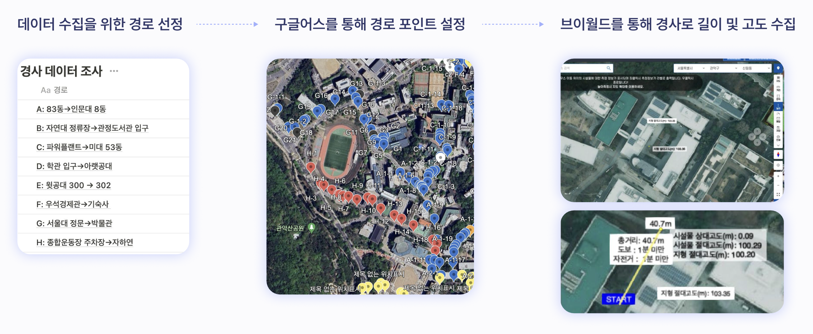

Slope Data Visualization through a Formative Approach

This project explores the power of data visualization to compare and analyze slope data across five universities in Seoul. By adopting a formative analysis approach, it enables intuitive understanding and accessibility for users.
The Context
The urban landscape of Seoul presents diverse slope challenges that influence accessibility and usability within university campuses. Understanding these differences is vital for enhancing campus planning, student mobility, and accessibility. Through this project, slope data was collected, processed, and visualized to reveal comparative insights across institutions.
Key Insights
- Diverse Slope Profiles: Each university exhibited unique slope patterns, highlighting accessibility challenges specific to their geography.
- Interactive Visualization: Users could explore data interactively, comparing slope data across campuses to identify patterns and anomalies.
- Accessibility Implications: Findings could inform campus infrastructure improvements to promote inclusivity and mobility.
Data Collection
Data collection involved selecting key paths on each university campus, focusing on high-traffic areas and representative routes. Using tools like Google Earth for route point identification and Bridle for measuring slope gradients and distances, a comprehensive dataset was constructed.
Formative Approach
The formative approach employed in this project focused on simplifying complex slope data into visually digestible formats. Key strategies included:
- Layered Representation: Slope data was divided into categories of severity and displayed using intuitive color gradients to highlight steepness and accessibility issues.
- Modular Design: The visualization was constructed with adjustable modules, allowing users to toggle between campuses and isolate specific data points for analysis.
- Data Abstraction: Raw geographical data was abstracted into shapes and patterns, facilitating easy comparison without overwhelming the viewer.
- User-Centric Focus: The interface was designed with accessibility and engagement in mind, ensuring that users from diverse backgrounds could interact effortlessly.
The Visualization Tool
The visualization tool simplifies complex slope data into accessible insights. Key features include:
- Interactive Graphs: Slope data is represented in easy-to-navigate graphs, enabling users to quickly identify trends and comparisons.
- Data Overlays: The tool offers layered visualizations, such as overlays of slope severity with campus landmarks, to provide contextual understanding.